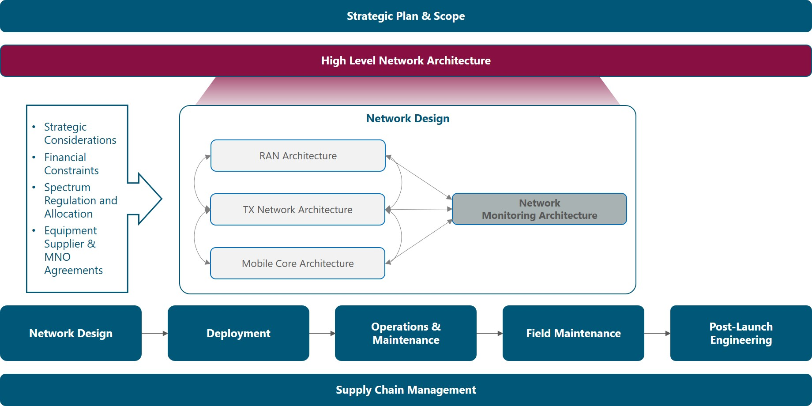
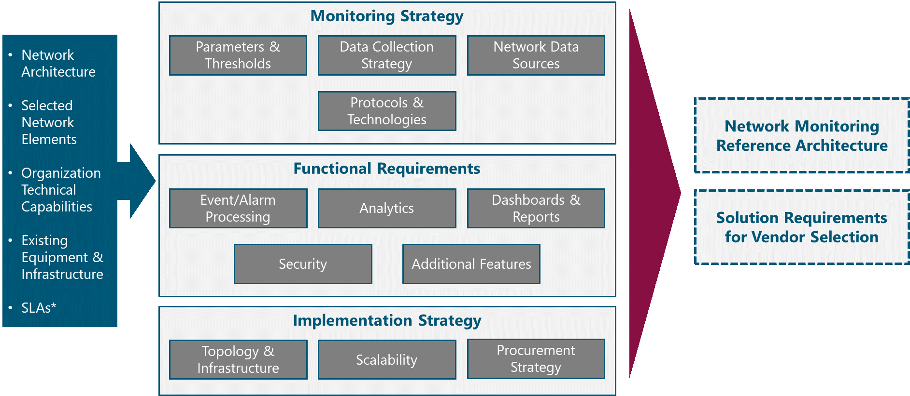
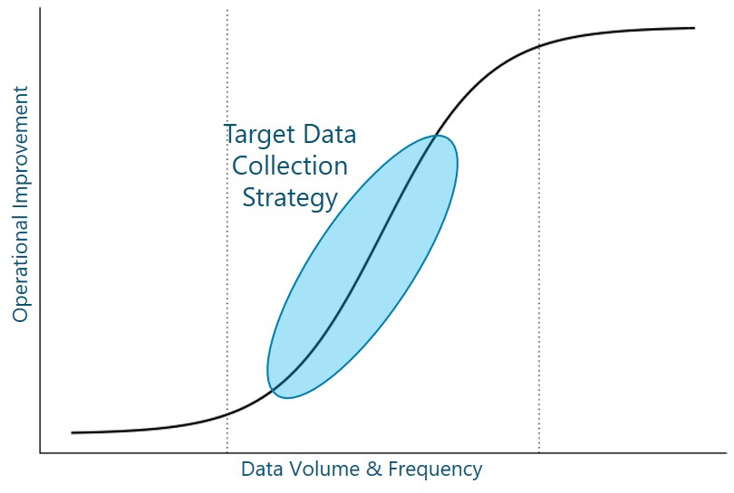
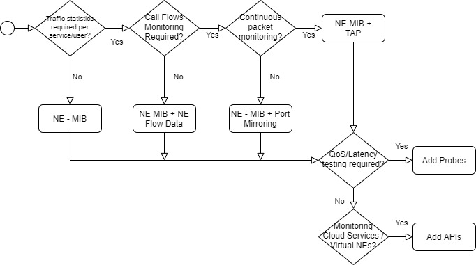

1 Introduction
Once Network Architecture for the Radio Access Network (RAN), Transport and Mobile Core is defined, Network design and deployment takes place to finally enter the Operations phase. While operating the network, visibility into whats happening in the network is critical to identify problems, apply timely network and service repair/restore actions, improve performance, plan capacity and perform billing to customer Operators.
This module guides the NaaS Operator through an overview of network monitoring aspects required to define a solution. Furthermore, it guides the operator through the definition of these aspects, contributing to homologate the view across the organization and allowing for effective engagement with solution vendors.
The module addresses the high-level monitoring strategy, functional requirements, and implementation strategy, generating as final output the documentation of the Network Monitoring Reference Architecture and a formal Requirements Specification.
1.1 Module Objectives
This module will enable NaaS Operators to define all architectural aspects regarding Network Monitoring. The specific objectives of this module are to:
- Provide an information base and criteria to define the overall Network Monitoring strategy and data collection mechanisms to be implemented.
- Present an analysis of network monitoring functionality and a method to specify functional requirements for the Network Monitoring solution.
- Guide the NaaS Operator to establish an implementation strategy according to its own requirements and constraints.
- Provide guidelines to generate a consolidated Reference Architecture and Requirements Specification for evaluation and vendor selection for the Network Monitoring solution.
1.2 Module Framework
The Module Framework in Figure 1 describes the structure, interactions, and dependencies among different NaaS Operator areas.
The Strategic Plan & Scope provides business context for the NaaS Operator and serves as a guideline for the definition of the High-Level Network Architecture.
The Network Monitoring Architecture module is within the High-Level Network Architecture stream. The generated output of this module will serve as a reference for Network Design and will drive decisions in the Supply Chain Management.

Figure 1. Module Framework
Figure 2 presents a functional view of the Network Monitoring Architecture module where the main functional components are exhibited as well as its main inputs and outputs. Each functional block is discussed in its own section of the outline, detailing the impact of the respective inputs. In addition, a final section regarding outputs is provided.

Figure 2. Network Monitoring Functional View
The rest of this module is structured as follows: Section 2 provides an analysis and guidance to define the aspects related to monitoring strategy including data sources and monitoring technologies. Section 3 covers the functional requirements for a network monitoring solution; and Section 4 discusses the various options to implement network monitoring in a NaaS Network. Finally, Section 5 discusses how to tie all components together into a formal Reference Architecture and Requirements Specification.
2 Monitoring Strategy Definition
Overview of strategic aspects of network monitoring, including parameters, data sources and monitoring technologies, providing the NaaS Operator with criteria and guidelines to define its own Monitoring Strategy.
2.1 Network Monitoring Fundamentals
Network Monitoring is the practice of continuously measuring, analyzing and reporting outages, faults, deficiencies and performance metrics regarding network elements, links and services, contributing to maintain and optimize network availability and performance.
The process of network monitoring is automated through network monitoring systems, usually implemented as software only, but in certain cases using additional hardware to improve visibility into specific performance metrics.
Network Monitoring systems track and log network parameters and when predetermined thresholds are crossed, alarms are triggered and notified to the Operations personnel to initiate fault management procedures. In addition, performance metrics are also analyzed to look for optimization opportunities and to provide planning inputs.
Performance of Telecom business is greatly determined by network performance. In consequence, to improve/maintain business performance, network performance needs to be maintained/improved, requiring an effective network monitoring solution as you can only manage what you measure. In this sense, network monitoring is an imperative for any communication service provider, fixed or mobile and of any size.
An effective network monitoring solution provides the following benefits:
In the NaaS scenario, network monitoring is even more critical:
In the following sections, the NaaS Operator is guided through the definition of the main aspects of network monitoring.
2.2 Parameters & Thresholds
The first step towards the definition of the Network Monitoring Architecture is to identify what to monitor. To do so, the NaaS Operator needs to have a clear definition of the key performance indicators (KPIs) for its network. Then, the most important parameters to be monitored and thresholds for alerts are selected.
KPIs measure network performance on a macro level, they are metrics of interest for the NaaS Operator management team. KPIs are used to communicate the overall status of the network, benchmark networks, detect problem areas and manage Service Level Agreements with customer Operators and with Service Providers (e.g. transport service providers).
KPIs are relevant to network operations as they allow to:
KPIs are calculated from network performance monitoring counters, alarms and status parameters, which are continuously collected by the Network Monitoring System. To achieve a well-monitored network, the following categories of KPIs shall be considered:
In addition, for RAN and E2E the following categories can be considered:
KPIs for each category and recommendations to set thresholds are provided in Table 1. In addition, the NaaS Operator is encouraged to use the KPI Specification Template to establish and document its own KPIs and thresholds.
|
Category |
KPI |
Description |
Recommendations |
|
Availability |
Monthly Availability |
Proportion of time that the service provided by the network is in working condition |
E2E Availability per site should be at least 99% which represents almost 4 days of downtime per year. Availability of network elements and network sections should be adjusted accordingly |
|
MTBF |
Mean time between failures. Period with continuous uptime averaged over a month or a year |
For information purposes only |
|
|
MTTR |
Mean time to repair. Period to repair a network failure averaged over a month or a year |
To be defined based on SLAs with customers |
|
|
Integrity & Performance |
Latency |
Round trip time. Average time for a packet to be sent, reach destination and get back to the sender |
The E2E Latency or round trip time should be below 80 ms. Latency for each segment of the network should be adjusted accordingly. Latency for satellite links will be significantly higher (at least 400 ms) |
|
Average Throughput |
Average transmission rate for a specific service or interface. Should be measured in both ways: downlink and uplink |
For RAN Equipment <50% of maximum eNodeB
capacity. |
|
|
Max Throughput |
Maximum transmission rate for a specific service or interface within a time interval. Should be measured both ways: downlink and uplink |
For information purposes only |
|
|
Packet Loss Rate |
Percentage of the number of lost or errored packets between two interfaces over a specified time interval |
< 1% |
|
|
Load / Utilization |
Busy Hour Average Active Users |
Average number of users with active sessions at busy hours |
< 50% of eNodeB capacity |
|
Busy Hour Peak Active Users |
Peak number of active users at the busy hour |
< 80% of eNodeB capacity |
|
|
Traffic Volume |
Total amount of data (in MB or GB) that has been transmitted at the user, cell and network level |
For information and billing purposes. Can be calculated on a daily and monthly basis |
|
|
Utilization |
Percentage of resources being used at any point in time. Should consider cell, interface, CPU, and Memory utilization |
80% |
|
|
Accessibility |
E-RAB Establishment Success Rate |
Ratio of successful E-UTRAN Radio Access Bearer (E-RAB) establishment procedures with respect to the total number of E-RAB establishment attempts |
99% |
|
EPS Attach Success Rate |
Ratio of successful Evolved Packet System (EPS) attachment procedures with respect to the total number of attach requests |
5% |
|
|
Call Setup Success Rate |
Percentage of calls successfully established without facing blockage in the network as a ratio of the total number of call attempts |
98.50% |
|
|
Call Setup Time |
Average time to establish a voice call, from call initiation to the called party being alerted |
10 s |
|
|
Retainability |
E-RAB Drop Rate |
Ratio of abnormal E-RAB releases with respect to the total number of E-RAB successfully established |
2% |
|
Call Drop Rate |
Percentage of calls dropped due to technical problems or coverage gaps in the service providers network as a ratio of the total number of calls successfully established |
1.50% |
|
|
Call Success Rate |
Percentage of calls successfully established without facing blockage in the network as a ratio of the total number of call attempts made and then successfully terminated from the user-end |
97% |
Table 1. Baseline KPIs and Recommendations.
Once KPIs are established, the NaaS Operator must define which parameters should be monitored throughout the network to feed the calculation of the KPIs and to identify any performance issues or element failures.
Table 2 shows a baseline recommendation of parameters to be monitored in the NaaS network with comments for applicability and further customization.
|
Network Element |
Parameter |
Comments |
|
Generic |
Interface Status |
Physical interfaces at minimum. Logical interfaces may be monitored as well |
|
Traffic Counters |
Various granularities can be defined. Baseline is at the physical / logical interface level |
|
|
Interface Utilization |
For all interfaces |
|
|
Packet Errors |
Error counters for each interface/link |
|
|
Interface Rx Power |
Applies for Radio or Optical Interfaces |
|
|
CPU Utilization |
For all network elements |
|
|
Memory Utilization |
For all network elements |
|
|
Network Element (NE) Temperature |
For all network elements |
|
|
Power Status |
Whether the Primary, Secondary, and/or Batteries are working properly |
|
|
Fan Status |
Only for NEs with integrated fans |
|
|
RAN Equipment |
Throughput |
Average and Maximum, Downlink and Uplink |
|
Radiofrequency Resource Utilization |
Number of PRBs being used or percentage of PRBs being used in Downlink and Uplink |
|
|
Attached Users |
Number of registered users |
|
|
Active Users |
Number of users with an active session |
|
|
Radio Resource Control (RRC) Protocol Performance Counters |
Includes number of E-RAB requests, attach requests, call setup requests, successful and failure events |
|
|
Downlink Latency |
Processing latency at the eNodeB, from the time a packet is received at the Backhaul interface to the time the packet is scheduled in the air interface |
|
|
Transport Equipment |
Layer 2/ Layer 3 Protocol Status |
Refers to routing tables, neighbor status, convergence status, etc. |
|
Layer 2/ Layer 3 Protocol statistics |
Refers to statistics regarding number of events, number of neighbors, etc. |
|
|
Internet Control Message Protocol (ICMP) Statistics |
Ping statistics: number, RTT, packet loss |
|
|
Core |
Control Plane Performance Counters |
Counters for signaling events |
|
User Plane Performance Counters |
Traffic statistics at the user plane that may be useful for billing customer MNOs |
|
|
Power |
Mains Status |
AC Power received from the power company |
|
Battery Status |
Charging/Discharging, Voltage |
|
|
Input Voltage |
Input voltage to the power supply unit and rectifiers |
|
|
Output DC Voltage |
Output voltage delivered to network elements |
|
|
DC Load Current |
Current drained from the power supply unit to the network elements. |
Table 2. Baseline parameters to be monitored in a NaaS Network.
In addition, the following recommendations are provided to the NaaS Operator:
In order to customize monitoring parameters and thresholds for its own network, the NaaS Operator may use the Monitoring Parameters Definition Wizard.
2.3 Data Collection Strategy
In the previous section, recommendations to specify network parameters to be monitored have been provided. Now it is vital to consider that network monitoring data is continuously generated and important decisions regarding where and how often to collect this data must be made.
As the amount of monitored parameters and collection frequency increases, operational improvements follow an S-curve. As shown in Figure 3, a small amount of data with low frequency offers low value, then, there is an inflection point where incremental data can deliver high value; however, there is a second inflection point from which more data starts to have diminishing returns.

Figure 3. Operational Improvements and Data Collection Strategy.
Furthermore, it is important to consider that a higher amount of data and higher collection frequency means higher monitoring complexity and cost, and higher monitoring overhead on the network. Thus, the NaaS Operator should find an equilibrium point where the operational improvements are exploited under an adequate investment and complexity for the monitoring system.
The following recommendations are provided for the NaaS Operator to define its own monitoring intervals throughout the network:
2.4 Network Data Sources
Typically, monitoring data is obtained from network elements. However, in some cases an additional level of visibility or functionality requires additional hardware to monitor the network. Furthermore, virtualized functions and cloud services cannot be directly monitored; instead, APIs are used to monitor their performance and availability status.
Below, a description and comparison of the most common network data sources are presented. Afterwards, guidelines to select the most suitable data sources based on the NaaS Operator use cases, constraints and requirements are presented.
Table 3 summarizes and compares the network data sources described above.
|
Data Source |
Type of Data |
NE Impact |
NE Support |
|
NE - MIB/ Data Model |
Availability Status & Performance Counters |
Low |
Supported by virtually ALL network elements |
|
NE - Flow Data |
IP Flow Statistics |
Medium |
Supported by carrier grade routing and switching equipment |
|
NE - Mirror Port |
Packet |
High |
Mainly routing and switching equipment. A physical port may be required on the monitored network element |
|
TAP |
Packet |
None |
Not Required |
|
Probe & Synthetic Test |
Performance Measurements |
None |
Certain network elements, may support synthetic tests |
|
API |
Availability, Performance & Status |
None |
Not Required |
Table 3. Network Data Sources.
In order to select which data sources to implement for its Network Monitoring Architecture, the NaaS Operator can go through the process flow presented in Figure 4. Also, the Network Data Sources Selection Wizard can be used for the same purpose.

Figure 4. Network Data Sources Selection Process.
2.5 Monitoring Protocols & Technologies
In addition to data sources, various protocols and techniques exist to collect data from these sources. In the following sections, the main protocols and techniques are described, providing guidance for the NaaS Operator to determine which methods to implement based on the use cases and requirements for each of them.
2.5.1 SNMP (Polling)
Each network element has embedded agents that speak Simple Network Management Protocol (SNMP). These agents are interrogated with a polling-based approach, returning metrics from the network element.
Polling consumes many resources from the network monitoring system, especially as the number of monitored network elements increases. A problem with SNMP is that low latency updates coming from network elements may be delayed due to the polling mechanism
Use Case: SNMP covers the basic requirements for availability and status metrics, including slow traffic monitoring.
Requirements: SNMP is supported by virtually every possible network equipment and monitoring software. The only requirement to set it up is to perform an adequate configuration at the network element and monitoring system level.
A deeper exploration of SNMP features is given in the SNMP Primer.
2.5.2 NetFlow
NetFlow is a method used to report on the traffic that is passing through network elements. Rather than deploying probes around the environment to capture, analyze, and report on traffic behaviors, flows are collected and processed by collectors. The utilization of collectors allows to apply analysis technologies to provide insight into which devices and applications are consuming bandwidth, how long the conversations are lasting and who is participating in them.
Because the data is summarized (and sometimes sampled), a degree of detail is removed to reduce bandwidth overhead, simplify processing and to extract meaning from the actual network data.
Several protocols, both proprietary and standard-based that operate under this principle have been defined. Proprietary protocols include among others NetFlow from Cisco, J-Flow from Juniper and NetStream from Huawei. On the other side, standard-based protocols include sFlow which is considered an Industry Standard and IPFIX that has been specified by the IETF.
Use Case: Detailed traffic analysis where it is not required to analyze a specific set of network packets, nor does it require timing or delay information. Basically, NetFlow enables network planning and optimization with the right granularity to keep the system simple and with reasonable storage requirements.
Requirements: To leverage NetFlow technologies for network monitoring, the NaaS Operator needs to make sure whether network elements support it and under which protocol. In addition, hardware or software-based collectors are required as well as some form of pre-processing and long-term storage.
For a detailed description and comparison of NetFlow and Packet technologies, the NaaS Operator may consult the Primer on NetFlow and Packet Data.
2.5.3 Packet Collection
Packet collection consists of retrieving an exact copy or relevant data from every packet transmitted over a network interface. Packets offer full visibility into bursty traffic behavior, enabling a greater insight and precision than other technologies. Packets provide information about the precise microsecond when a packet passes a capture point, allowing to measure response time and network latency.
Packet collection is enabled through the potentially costly (and often, impossibly costly) implementation of hardware collectors to capture packets.
Use Case: Detect and troubleshoot performance problems that are beyond network congestion and that are timing-based such as excessive delays, latencies, etc. Usually applied only to critical interfaces such as mobile core interfaces to validate protocol signaling and procedures.
Requirements: A capture point (TAP) and capture device (collector) must be deployed to get packet visibility on specific interfaces to be monitored. As the network grows, more TAPs and collectors are required. When signaling traffic is encrypted, an additional burden is put into the collectors that must perform decryption of this traffic, implying additional processing capacity and costs. High storage requirements are also characteristic as information about each packet is stored for analysis.
The NaaS Operator is encouraged to read the Primer on NetFlow and Packet Data for further comparison of these technologies.
2.5.4 Streaming Telemetry
Similar to SNMP, with Streaming Telemetry, availability and performance data is collected from the network elements, but instead of using the polling mechanism, it uses a pushing mechanism to overcome the inefficiencies of polling. Under this pushing mechanism, the monitoring system subscribes itself to certain updates that each network element issues (streams) periodically or on an event basis.
By using the push mechanism, Streaming Telemetry enables a high reporting frequency (up to 10 s) for critical data and offers complete access to operational and configuration data using open data models. In addition, all parameters reported are time-stamped, allowing for a better understanding and analysis of performance metrics.
Streaming Telemetry can use various protocols for telemetry transport such as UDP, TCP and gRPC, which is a web-based protocol that significantly reduces the required bandwidth to transport data and adds TLS encryption of telemetry data.
Use Case: Streaming Telemetry is suited to any SNMP use cases and, in some cases, may replace NetFlow. However, the core use case is when low latency updates are required. In addition, it is used to retrieve configuration data and to interface with APIs that offer telemetry subscription services for cloud and virtualized network elements.
Requirements: The basic requirement is that the network elements or services must support the push mechanism and a suitable transport protocol. In addition, network elements should provide their data models in a standard format, being the YANG model the prevalent choice in the Industry. The Monitoring system architecture remains almost the same as with SNMP.
Further exploration of the principles, features, and benefits of this technology is provided in the Streaming Telemetry Primer.
2.5.5 Selecting Monitoring Protocols & Technologies
Based on the above descriptions, the NaaS Operator must define which monitoring protocols and technologies will be part of its Network Monitoring Architecture. The following recommendations are provided as a supporting guide for the NaaS Operator analysis:
As a complement to these guidelines, the NaaS Operator can make use of the Monitoring Technology & Protocol Selection Wizard.